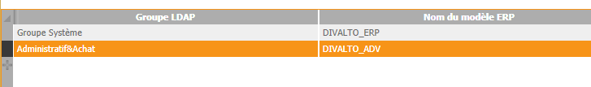

Les utilisateurs de l'annuaire LDAP sont importés dans la table des utilisateurs de l'ERP sur la base de règles permettant d'associer groupes d'utilisateurs dans l'annuaire et modèles d'utilisateurs dans l'ERP.
Après avoir lancé la console d'administration LDAP, cliquez sur le bouton Groupes. Le tableau affiché permet de saisir les associations. Par exemple :

Attention : L’utilisateur de la console doit disposer du droit HCO pour être autorisé à créer ou modifier ces associations.
A partir de là, tous les utilisateurs LDAP appartenant par exemple au groupe "Administratif&Achat" seront importés dans la table des utilisateurs de l'ERP avec les paramètres du modèle "DIVALTO_ADV".
Il est possible qu'un utilisateur appartienne à plusieurs groupes LDAP et qu'un conflit apparaisse pour le choix de son modèle. Dans ce cas :
Si la case "Si conflit de modèle, prendre le premier" est cochée, c'est la première règle d’association définie pour cet utilisateur qui sera appliquée.
Dans le cas contraire, l'utilisateur ne sera tout simplement pas importé. Au besoin, l’administrateur devra modifier les propriétés de l’utilisateur ou aménager les règles d’association.
Cette option est affichée dans le cadre Conflit de groupe en bas de l'écran.
Voir aussi : Règles de correspondance des propriétés de l'annuaire avec les champs de la fiche utilisateur de l'ERP.